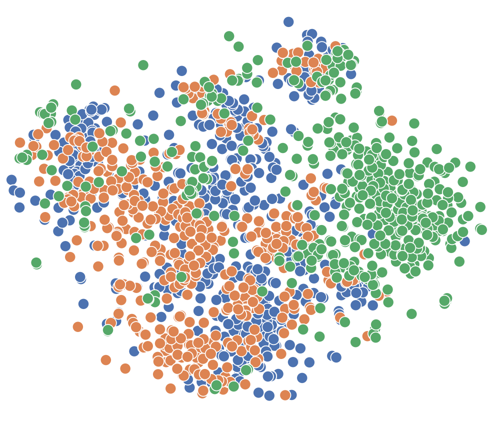
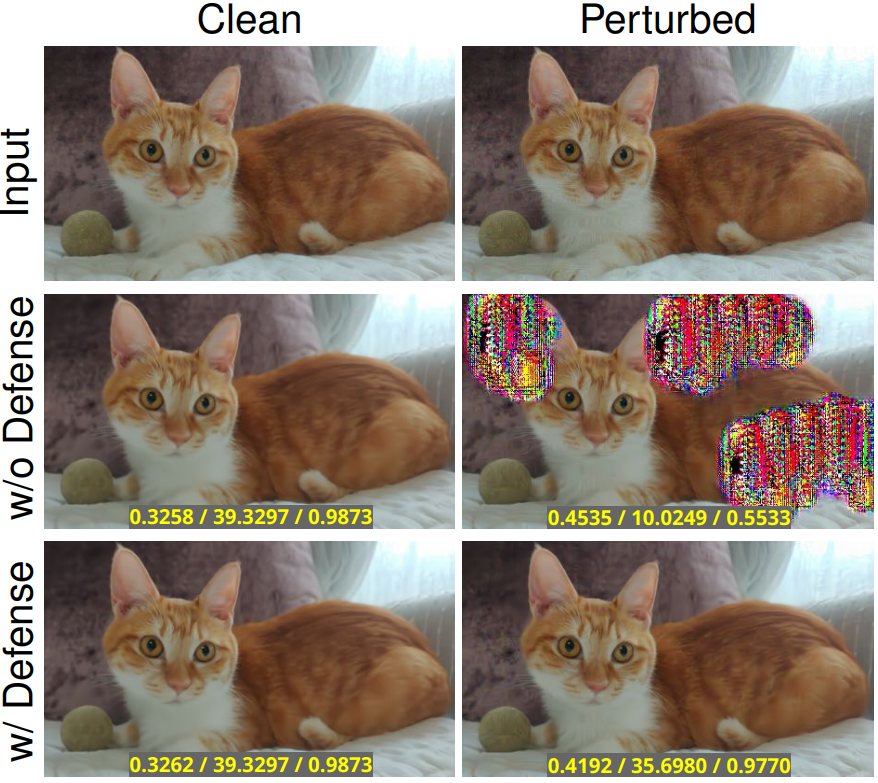
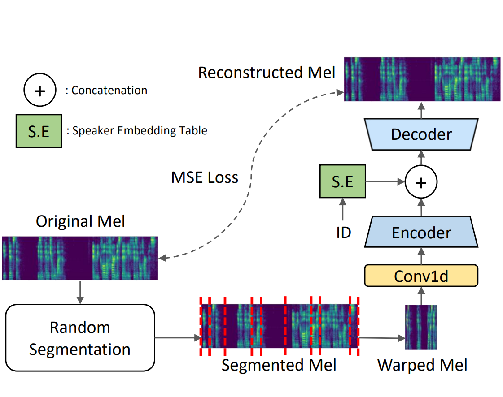
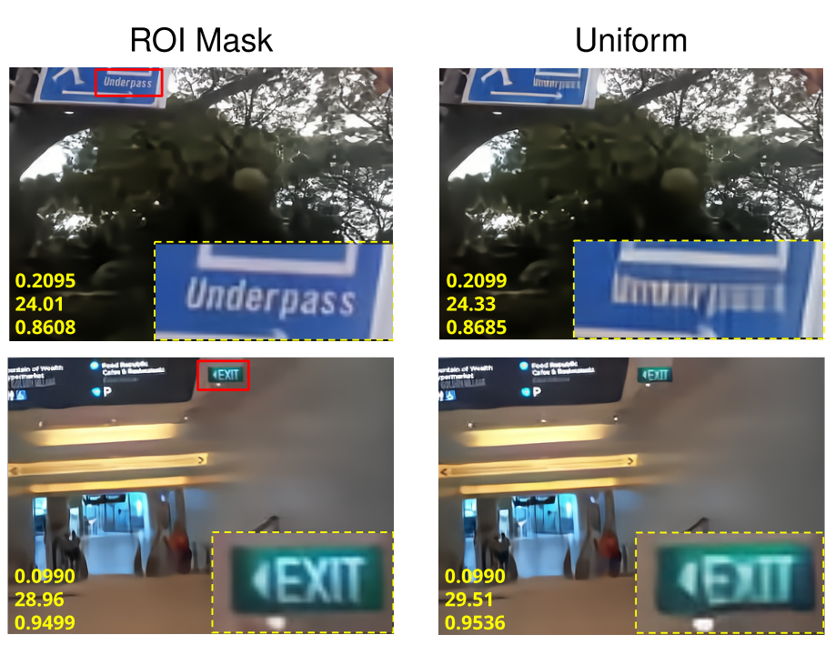

|
|
Myungseo Song
I'm an undergraduate student in Computer Science and Engineering at Seoul National University.
Currently, I'm on leave from my study and working as a lead machine learning researcher at mAy-I, an AI startup in South Korea.
Email /
CV /
Scholar /
Github
|
Research Interests
My research interests lie in machine learning and computer vision for real-world, large-scale problems and applications, with a focus on generalized models through unsupervised learning, multi-modal learning, and debiasing techniques.
I'm also interested in generative models and their applications, such as image/video compression.
|
Education
Seoul National University
Mar. 2018 – Aug. 2026 (expected)
B.S., Computer Science and Engineering
* Includes three-year mandatory military service in South Korea
|
Work Experience
mAy-I, Inc.
Nov. 2023 – Present
Lead Machine Learning Researcher
Seoul, Korea
* Fulfilled mandatory military service
CNAI, Inc.
Oct. 2021 – Oct. 2023
Machine Learning Researcher
Seoul, Korea
* Fulfilled mandatory military service
Computer Vision Lab in Seoul National University
Sep. 2020 – Sep. 2021
Research Intern, Advisor: Prof. Bohyung
Han
Seoul, Korea
NCSOFT, Inc.
Jul. 2020 – Aug. 2020
Research Intern
Pangyo, Korea
Intellisys, Inc.
Jan. 2020 – Feb. 2020
Software Engineering Intern
Seoul, Korea
|
|

|
Exploring the Camera Bias of Person Re-identification
Myungseo Song,
Jin-Woo Park,
Jong-Seok Lee
ICLR 2025 (Spotlight paper)
Paper
/
OpenReview
|
|

|
A Training-Free Defense Framework for Robust Learned Image
Compression
Myungseo Song,
Jinyoung Choi,
Bohyung Han
arXiv preprint, 2024
Paper
|
|

|
Unsupervised Pre-training for Data-Efficient Text-to-Speech on Low Resource
Languages
*Seongyeon Park,
*Myungseo Song,
Bohyung Kim,
Tae-Hyun Oh
(*Equal contribution)
ICASSP 2023
* Also presented at ICML 2022 Workshop on Machine Learning for Audio Synthesis (Oral presentation)
Paper
/
Code
|
|

|
Variable-Rate Deep Image Compression through Spatially-Adaptive Feature
Transform
Myungseo Song,
Jinyoung Choi,
Bohyung Han
ICCV 2021
Paper
/
Code
|
Academic Service
Journal Reviewer
TIP (2023)
Conference Reviewer
ICLR (2025), NeurIPS (2024), WACV (2023)
|
|